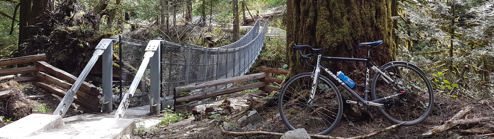

Senior Data Scientist at Kinsol Research
|
I am a Senior Data Scientist with Kinsol Research, based in Victoria, BC (Canada). I'm a machine learning generalist, with a lifelong passion for turning the world around us into data to better understand it. I've worked with diverse teams in various domains such as earth observation, medical sensors, and social media personalization. I completed an M.Sc. with Prof. Gregory Dudek, in the Mobile Robotics Lab at McGill University. My thesis was about learning sparse and smooth semantic maps using a combination of classic probabilistic- and deep-learning techniques. My graduate work included significant hands-on work in marine robotics, including with the AQUA robot, at Woods Hole Oceanographic Institute and Ocean Networks Canada. Previously I also worked at Clerapath Robotics. |
| Unsupervised Learning of Interpretable Models for Sparse, Smooth Data | M.Sc. Thesis | bib | |
| Learning seasonal phytoplankton communities with topic models | OCEANS 2017 | preprint | poster |
| Phytoplankton Hotspot Prediction With an Unsupervised Spatial Community Model | ICRA 2017 | bib | |
| Learning deep-sea substrate types with visual topic models | WACV 2016 | bib | |
| Adaptive Parameter EXploration (APEX): Adaptation of robot autonomy from human participation | ICRA 2014 | bib | |
| Unsupervised environment recognition and modeling using sound sensing | ICRA 2013 | bib |
Outside the office, I like to make experimental and dance music. Some of my synth patches are collected On my github I was one half of the drone music project Welter & Associates and helped organize the DIY tape label Misery Loves Co..
